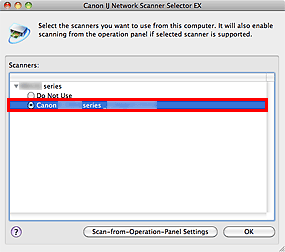
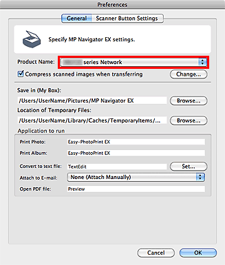
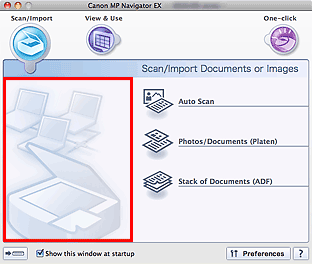
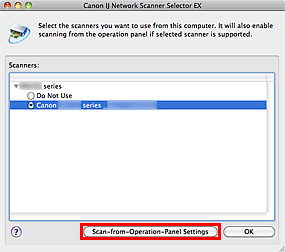
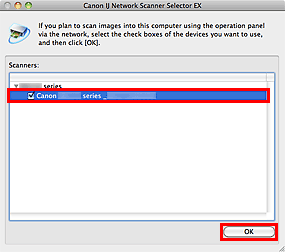
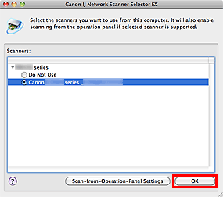

Important
Important-
Multiple users cannot scan at the same time.
 Note
Note-
Complete the network settings of the machine beforehand. (Refer to the printed manual: Getting Started.)
Complete the following settings to enable scanning over a network.
Specifying the Machine
Use IJ Network Scanner Selector EX to specify the scanner you want to use. By specifying the scanner, you can scan over a network using your computer or the Operation Panel of the machine.
Important-
If the product you want to use is changed with IJ Network Scanner Selector EX, the product used for scanning with MP Navigator EX changes as well. The product for scanning using the Operation Panel also changes.
If the machine is not selected in MP Navigator EX, check that it is selected with IJ Network Scanner Selector EX.
-
To scan using the Operation Panel of the machine, specify the machine with IJ Network Scanner Selector EX, then click Preferences... from Canon IJ Network Scanner Selector EX in the menu bar and select the Enables scanning from the operation panel checkbox in the Preferences dialog.
Note-
The following setting is not required if the machine has already been specified during setup.
-
From the Go menu of Finder, select Applications, then double-click the Canon Utilities folder, IJ Network Scanner Selector EX folder, then Canon IJ Network Scanner Selector EX icon.
Canon IJ Network Scanner Selector EX appears in the menu bar, and the Scan-from-PC Settings screen appears.
-
Select the machine from Scanners.
Select the Bonjour service name set to the machine. Do Not Use is selected by default. When Bonjour is disabled, the MAC address of the machine is displayed.
Important-
If multiple scanners exist on the network, multiple model names are displayed. In that case, you can select one scanner per model. For details, refer to the help file of IJ Network Scanner Selector EX.
-
-
Click OK.
Note-
The scanners selected in the Scan-from-PC Settings screen will be automatically selected in the Scan-from-Operation-Panel Settings screen as well.
Setting for Scanning with MP Navigator EX
To scan over a network using MP Navigator EX, specify the machine with IJ Network Scanner Selector EX, then follow the steps below and change the connection status between the computer and the machine.
-
Start MP Navigator EX.
-
Click Preferences.
-
Click the General tab and select "XXX series Network" (where "XXX" is the model name) for Product Name.
Note-
When you click Change..., the Scan-from-PC Settings screen of IJ Network Scanner Selector EX appears.
If you have multiple scanners, you can select other scanners.
-
For USB connection, select "XXX series" (where "XXX" is the model name) for Product Name.
-
-
Click OK.
The Preferences dialog closes. You can now scan via a network connection.
Go to the Main Menu to check whether network scanning is enabled.

Setting for Scanning Using the Operation Panel
You can make settings for scanning using the Operation Panel of the machine.
Important-
Set MP Navigator EX to use the machine via a network connection beforehand.
-
From the Go menu of Finder, select Applications, then double-click the Canon Utilities folder, IJ Network Scanner Selector EX folder, then Canon IJ Network Scanner Selector EX icon.
Canon IJ Network Scanner Selector EX appears in the menu bar, and the Scan-from-PC Settings screen appears.
-
Click Scan-from-Operation-Panel Settings.
The Scan-from-Operation-Panel Settings screen appears.
-
Select the machine from Scanners and click OK.
The Bonjour service name set to the machine is selected by default. When Bonjour is disabled, the MAC address of the machine is displayed.
Note-
When multiple scanners are connected via a network, you can select up to three scanners. For details, refer to the help file of IJ Network Scanner Selector EX.
-
-
Return to the Scan-from-PC Settings screen and click OK.

Note-
If the Bonjour service name or MAC address of the machine is displayed in gray or not displayed, or cannot be selected, check the following conditions and click OK to close the screen, then reopen it and select the machine.
- ScanGear (scanner driver) is installed
- Network setup is completed after installing ScanGear
- Network communication between the machine and computer is enabled
If the machine is still not displayed, see "Troubleshooting."